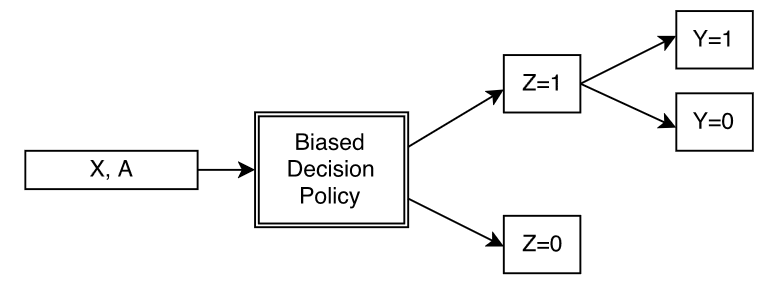
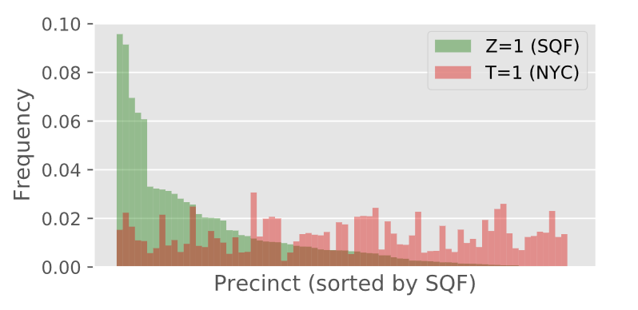
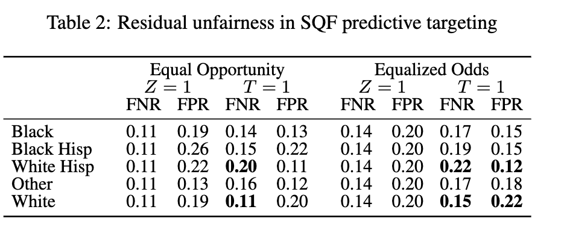

In his speech, Narayanan explains that while quantitative methods do have value and potential use cases, they have become overly trusted over time. Specifically, he mentions the common aphorism in statistics that “all models are wrong, but some models are useful” (Narayanan (2022)). Because statisticians are often forced to make the assumption that their model is ‘wrong’, or that its conclusions may be caused by factors which are irrelevant to the question at hand, they often end up simply defaulting to the null hypothesis, which is a term for the way we assume the world works without outside evidence. In the case of many models, this means disregarding quantitative evidence of bias, as the null hypothesis holds that there is no discrimination.
Narayanan also notes that the formal belief that the fields of statistics and computer science have held in objectivity may be faulty. In any given research paper, many subjective decisions are made which can alter the results (Narayanan (2022)). When we believe that a result is truly objective, it masks the reality that a human performed the given study. The impossibility of objectivity is further illustrated in our attempts to define fairness. Despite years of concerted effort, the aforementioned fields of research have failed to put forth a uniformly accepted definition of fairness (Narayanan (2022)). There may not exist an objective measure of fairness, and our constant pursuit of objectivity may prevent us from applying useful and important definitions of fairness.
All of this being said, Narayanan still does believe in quantitative work of some kind, noting in the end of his speech that there is still great value in describing datasets. Instead of creating models which draw conclusions from datasets, we may spend our effort understanding the nature of the datasets themselves. Historically, this work has been deemed merely descriptive, and lacking in original thought, which has devalued it, but Narayanan points out that we can learn a great deal from simple observation (Narayanan (2022)).
In some cases, quantitative methods of fairness can be effective tools for social progress. An example study where quantitative methods were used in a beneficial way was Sahin et. al’s study of a predictive model created for psychiatric treatment. The model in question used features such as race, gender, educational background, financial background, and more to predict whether patients at high risk of psychosis would enter psychosis imminently (Sahin et al. (2024)). It is easy to imagine the potential ethical problems posed by such a model if it exhibits bias. If its predictions were used to justify administering treatment, or, more drastically, people being sent to psychiatric wards, then inaccurate results could lead directly to harming patients.
Sahin et. al examined the model’s results for fairness via several quantitative measures, notably including equality of accuracy and predictive parity. Equality of accuracy requires that for all groups, the model makes correct predictions at the same rate (Barocas, Hardt, and Narayanan (2023)). Sahin et. al found that equality of accuracy was satisfied across all groups, with no statistically significant deviations. Predictive parity requires that that across all groups, the true positive rate, i.e. the rate at which patients were predicted to enter psychosis and did, is balanced (Barocas, Hardt, and Narayanan (2023)). While the model did show slightly higher positive predictive value for males overall, no trends reached statistical significance on this front. However, there was one statistically significant source of bias in the model, which was the false positive rate. Sahin et. al found that the false positive rate for patients with lower levels of education was higher than those with higher levels of education (Sahin et al. (2024)).
Despite the model satisfying some quantiative definitions of fairness, it showed bias in terms of level of education. This quantitative audit is reasonably useful in and of itself, as it provides some level of understanding of the model’s performance and preferences towards certain features. However, just understanding that the model favors certain features over others does not fully answer whether it is a fair model or not. More specifically, it would be useful to have some metric by which we can deem a model “fair enough” for use. As Narayanan points out, there is no objective truth, and true fairness in predictive models may be an impossibility given the layers of bias that are baked into aspects of machine learning. To account for this difficulty, Sahin et. al took their audit one step further.
By comparing the results of the model to the predictions of actual clinicians, Sahin et. al were able to evaluate their model relative to a benchmark, which provides a different perspective on fairness. While the model did show bias towards level of education, studies of clinician’s predictions revealed a similar bias (Sahin et al. (2024)). What this suggests is that while the model may be unfair by some quantitative definition, it is statistically no more unfair than the clinicians performing the work currently. Quantitative methods may not be able to perfectly capture the idea of fairness, but by comparing quantitative analysis of a model to quantitative analysis of human prediction, we may get closer to an acceptable definition of fairness. If we accept that potentially biased humans are ultimately responsible for other humans in some situations, then it is possible that potentially biased models could work as effectively.
However, even if we can find metrics by which a model could be “fair enough”, our methods for evaluating fairness may be subject to bias regardless. A model making ‘fair’ predictions within a biased system still lies within a biased system. Further, attempts to correct bias within a biased system may be counterproductive. In a case study on the “Stop, Question, Frisk” policy, Kallus & Zhou examine how bias within datasets can perpetrate models in a way that cannot be corrected. Below is Figure 1 from Kallus & Zhou’s paper, which illustrates how datasets can be subject to bias in their very collection (Kallus and Zhou (2018)).

In this figure, the “biased decision policy” refers to the fact that when collecting data,humans are ultimately responsible for who is included and who is excluded. We only get to make predictions on the Z = 1 group, which are the included people in a dataset, but there often exists some excluded Z = 0 group. Because of the difficulty of collecting data on all people for whom a given model may be relevant, some (often many) constituents are bound to be left out of the datasets. In this case, even bias audits cannot capture the potential harms caused by incomplete data.
In their case study of SQF, for instance, Kallus & Zhou examined how overpolicing of certain precincts in New York City leads to disproportionate data. In terms of D’Ignazio and Klein’s notion of the Matrix of Domination, the disciplinary domain is at work in this scenario, as overpolicing of certain precincts creates a biased data pool from which it is impossible to train fair models (D’ignazio and Klein (2023)). Figure 4 from Kallus & Zhou, shown below, illustrates the problem clearly (Kallus and Zhou (2018)).

If police target certain districts over other ones, any demographic differences between the highly policed districts and the underpoliced districts will be reflected in the training data. Statisticians are aware of this difficulty, and as a means of correcting it, will often use quantitative methods to correct the prediction rates as a means of enforcing fairness. To account for this, Kallus & Zhou trained a logistic regression model to predict whether a given person is in criminal possession of a weapon, and then corrected the prediction rates according to two different principles: equality of opportunity and equality of odds. Under equality of opportunity, the true positive rate must be identical across all groups, and under equality of odds, both the true positive and false positive rates must be equal across all groups (Barocas, Hardt, and Narayanan (2023)). They then took the adjusted models and applied them to the full dataset of NYC’s population. The results are shown in Table 2 from their paper below (Kallus and Zhou (2018)).

Even when equality of opportunity or equality of odds is satisfied, the model still shows systematic bias against certain groups when generalized to the true population of NYC. This is because the available training data is inherently biased, and current quantitative methods of enforcing fairness are insufficient for correcting this injustice.
The key problem at play in this case is that data is ultimately an abstraction of reality. When we create predictive models, we use features which describe certain attributes of a given person. These features mark an attempt to use quantitative reasoning to measure qualitative aspects of a human. Knowing someone’s highest level of education does not provide direct insight into how their brain operates, or even their level of intelligence; it is only an approximation of status. This approximation is known as a measurement model, and at the heart of this discussion of fairness is the issue of measurement (Jacobs and Wallach (2021)).
When we take a measurement of a given property, we are forced into making assumptions. For example, say we are predicting whether a prospective borrower will default on a bank loan. The pertinent data regarding a given borrower is essentially their socioeconomic status. The term “socioeconomic status”, unfortunately, refers to a wide sweep of factors, ranging from income to cost of living to occupation and more. When we use a feature such as income to approximate socioeconomic status, we abstract away all other relevant factors, which leaves us with an imperfect picture. Jacobs & Wallach contend that these assumptions remain essentially undiscussed in computer science, and pose a significant theoretical problem to fairness in machine learning (Jacobs and Wallach (2021)).
Quantitative definitions of fairness are subject to similar issues of assumption. Attempting to measure fairness as a mathematical property is an abstraction of our real understanding of fairness in moral terms. Humans have varying understandings of the term “equality of opportunity”, for example, which means that measuring equality of opportunity statistically is not going to be accurate for everyone (Barocas, Hardt, and Narayanan (2023)). When we deem a certain mathematical explanation “fair”, we risk adoption of that definition without a critical examination of how it falls into our intuitive understandings of fairness (Jacobs and Wallach (2021)).
To return to Narayanan’s position with all of this in mind, the claim that quantative methods do more harm than good is worthy of careful consideration. As shown by the case studies of Sahin et. al and Kallus & Zhou, quantitative methods may provide some insight as to how models operate across various groups, but answering for whether they are “fair” or not requires further study and intervention. The predominant acceptance of quantitative methods has allowed many unfair models to be justified, when the actual academic philosophical debate on the issue of fairness remains in a state of aporia. Until we can formalize methods for using and creating models which we deem fair within an acceptable standard, quantitative methods of evaluation largely allow for misrepresentations of equality.